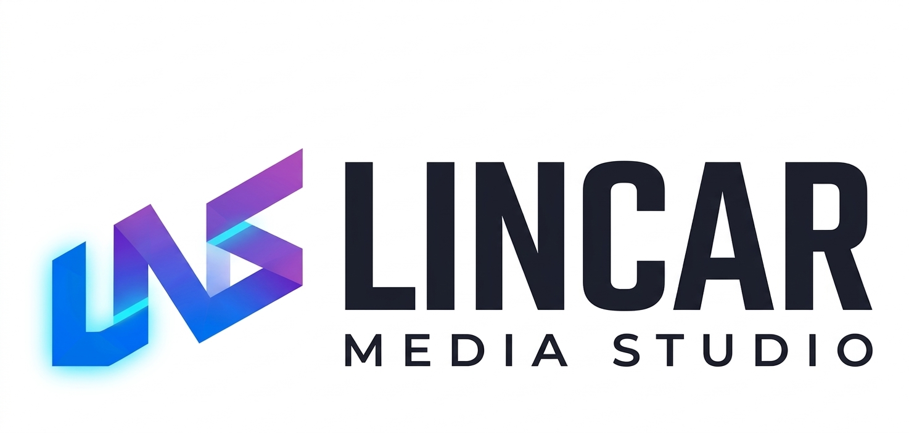

Claridad
El sistema actual no jerarquiza bien nombre, símbolo y soporte. El rediseño ordena lectura, aire y peso visual.

Propuesta de rebranding
Una evolución visual diseñada para elevar percepción clínica, claridad comercial y consistencia digital sin romper con la historia de la marca.
Diagnóstico
La identidad actual comunica servicio, pero todavía no sostiene una percepción premium ni una lectura suficientemente clara en digital. En tamaños pequeños pierde jerarquía, mezcla demasiados recursos y no deja una firma memorable.
El sistema actual no jerarquiza bien nombre, símbolo y soporte. El rediseño ordena lectura, aire y peso visual.
Una identidad más nítida facilita que la marca se recuerde después de consulta o recomendación.
Lo que funciona en un banner o en una story debe funcionar igual de bien en uniforme, anuncio y señalización.
Una marca con historia.
Una identidad con futuro.
Identidad de origen

Lo que funciona
El estilo manual comunica accesibilidad y un trato personalizado, algo que muchas clínicas pierden.
La marca ya tiene historia y vínculo con pacientes reales. Eso no se tira: se eleva.
La marca tiene una firma personal auténtica que diferencia de consultorios genéricos.
Lo que se resuelve
El logo actual pierde jerarquía en avatares, stories y piezas de bajo espacio.
Mezcla de recursos que no conviven bajo un sistema único, lo que genera inconsistencia.
No está preparado para uniformes, señalización, convenios ni campañas de mayor alcance.
La marca de origen ya tiene vínculo emocional y reconocimiento local. Por eso la evolución parte desde el respeto: toma esa cercanía y la traduce a una expresión más legible, más limpia y mejor preparada para crecer.
Sistema visual · proceso
Esta parte no repite la paleta ni la escala final. Explica el criterio con el que se tomaron esas decisiones.
Se definió una mezcla precisa entre cercanía, autoridad clínica y claridad editorial.
El color se depuró como sistema, no como decoración. Se ordenaron roles: base, énfasis, continuidad, respiración y jerarquía mínima.
Violetas profundos para autoridad y estructura.
Lavanda pálido para limpieza y lectura.
Dorado fino para jerarquía puntual, sin contaminar el sistema.
La decisión final no fue elegir “la más bonita”, sino la que mejor resolvía legibilidad, carácter y consistencia en consulta, digital y piezas comerciales.
Demasiado genérica.
Demasiado protocolar.
Autoridad sin frialdad.
Propuesta A
La serpiente y la columna convierten la marca en un emblema clínico reconocible incluso cuando el nombre no aparece completo. Es la ruta más simbólica y especializada.
Construye un ícono de fácil recuerdo para avatar, sello, uniforme y piezas de bajo espacio.
Tratamiento corporal, rigor clínico y una firma visual con más autoridad médica.

Icono complejo, difícil de escalar. Alta carga visual en formatos pequeños.
Símbolo destilado. Misma autoridad clínica, mayor claridad en cualquier escala.
Propuesta B
Esta ruta concentra el valor en la palabra. Reduce ruido, mejora la lectura y vuelve la identidad más elegante y adaptable. Es la propuesta más editorial y la más versátil para digital y materiales comerciales.
Mejora lectura en celular, anuncios, encabezados, PDFs, piezas impresas y firma digital.
Orden, cercanía, precisión y una estética más contemporánea sin perder humanidad.
Propuesta C
El caduceo alado con rayo se mueve hacia una presencia más expresiva. Es la ruta más potente para una marca que busca hacerse notar con un gesto frontal y de alto impacto.
Genera una firma muy fuerte para campañas, piezas promocionales, uniformes y cabeceras visuales.
Energía, determinación y una autoridad visual mucho más protagónica.
Caduceo alado original: potente en concepto, pero sin la depuración formal necesaria para escalar.
El emblema se destila. Mismo carácter simbólico, mayor impacto visual y mejor reproducibilidad técnica.
Tema de logotipos
Se mantienen bajo la misma lógica de presentación para comparar con criterio real: una misma caja de evaluación, un mismo aire visual y una misma distancia de lectura.
La ruta más icónica y especializada para distinguirse con un emblema propio.
La opción más limpia y versátil para piezas digitales, presentaciones y materiales comerciales.
La ruta con mayor impacto visual para construir una presencia más frontal y protagonista.
Sistema visual
Se unifican escalas, pesos y tonos para que la marca deje de sentirse fragmentada. Todo se ordena bajo un mismo criterio editorial.
Claridad clínica
Jerarquía consistente
Un sistema tipográfico pensado para consulta, digital y piezas comerciales.
#3B0A6E · Autoridad y base
#6A0DAD · Energía y énfasis
#9B59B6 · Continuidad
#C39BD3 · Cercanía
#F3EEF9 · Respiración
#D4AF37 · Jerarquía mínima
Aplicación digital
La nueva identidad sostiene una línea visual consistente para posts, reels, historias, portadas y anuncios. Ya no depende de improvisación gráfica.
Alcance del rediseño
Un mejor sistema visual no promete milagros, pero sí mejora percepción profesional, recordación y consistencia en todos los puntos de contacto. Eso vuelve a la marca más fácil de reconocer, recomendar y sostener en el tiempo.
Cuando la identidad se ve ordenada, el servicio también se percibe más serio y mejor resuelto.
Un sistema más firme ayuda a que nombre y símbolo permanezcan con más fuerza en la mente del paciente.
Piezas más claras facilitan anuncios, publicaciones, historias y mensajes comerciales con mejor presencia.
La marca queda lista para uniformes, señalización, convenios, kits impresos y campañas futuras.
Metodología Lincar Media Studio
Cada decisión de esta propuesta fue evaluada desde ocho disciplinas distintas. No hay elemento visual, verbal o estratégico sin respaldo de criterio especializado.
Sistema visual completo
Define color, tipografía, forma y proporción como un sistema, no como piezas sueltas.
Coherencia estética global
Garantiza que cada elemento visual comunique una sola personalidad de marca.
Dirección y alineación con negocio
Aprueba la dirección creativa y verifica que cada decisión tenga impacto en percepción de negocio.
Identidad en movimiento
Define cómo se comporta la marca en video, animación y entornos digitales dinámicos.
Aplicaciones físicas
Traduce la identidad a uniformes, etiquetas, packaging y materiales tangibles.
Posicionamiento y propósito
Construye el alma de la marca: valores, arquetipo, posicionamiento y propuesta de valor.
Visión comercial y ROI
Evalúa si la marca vende, si conecta con la audiencia real y si escala en el tiempo.
Voz, tono y mensajes
Define cómo suena la marca: naming, tagline, tono de voz y arquitectura verbal.
Esta propuesta es el resultado de ese equipo trabajando en un objetivo único: que Fisioterapia a tu alcance tenga la identidad que merece.
Cierre
FISIOTERAPIAa tu alcance
Mariana Rosas